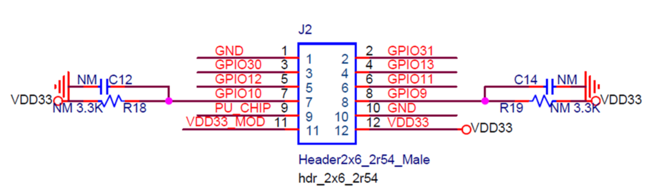

Low_Power_Mode_BL702L
总览
本示例主要介绍如何使用低功耗模式。
低功耗模式
系统进入低功耗流程
系统低功耗模式简称 PDS (Power Down Sleep)。 SDK中使用了Freertos。Freertos的idle task会检查当前BL702L是否处于无任务处理状态，是否能进入到低功耗模式。
- 如果Freertos处于idle状态，能睡眠，继续检查当前BLE是否能睡眠。如果Ble不能睡眠，则BL702L不能进入低功耗模式。如果BLE能睡眠，获取Ble的睡眠时间。
- 最终BL702L的睡眠时间将取Freertos能睡眠的时间和BLE能睡眠的时间中的较小值。如果最终的睡眠时间小于一个阈值，例如5ms，BL702L将不进入低功耗模式。
如果BLE的睡眠时间大于Freertos的睡眠时间，当BL702L醒来时，Ble仍然处理睡眠状态。在这种情况下，Ble会在以下两种情况醒来。
- Ble的睡眠时间结束。
- 如果有Ble的行为要发生，例如应用层要做Ble advertising，软件会唤醒Ble。
如果Ble的睡眠时间小于等于Freertos的睡眠时间, BL702L先从PDS醒来，然后Ble醒。
低功耗API
void btble_pds_enable (uint8_t enable)
该API用来使能或者禁用低功耗功能。
当enable=1时，使能低功耗功能。BL702L在idle状态下进入低功耗模式。
当enable=0时，禁用低功耗功能。BL702L在idle状态下不进入低功耗模式。
void btble_set_before_sleep_callback (btble_before_sleep_cb_t cb)
如果应用层在Ble睡眠前有事情要做，需要调用该API来注册callback函数。应用层在该callback函数中做需要做的事情。例如应用层有key scan的相关应用，在Ble睡眠前需要disable key scan中断，就可以在该callback函数中完成。
Ble可能因为睡眠条件不满足而不能进入睡眠，这种情况下，应用层需要在btble_set_sleep_aborted_callback注册的callback函数中重新enable key scan中断。
void btble_set_sleep_aborted_callback (btble_sleep_aborted_cb_t cb)
在Freertos idle task中，当BL702L不能进入低功耗模式的时候, 通过btble_set_sleep_aborted_callback注册的callback函数将会被调用。
void btble_set_after_sleep_callback (btble_after_sleep_cb_t cb)
当BL702L醒来后，该函数注册的callback函数会被调用到。应用层可以在该callback函数中做需要做的事情。
例如，应用层使用了key scan功能，则需要在该callback函数中恢复key scan的配置因为该配置在低功耗模式下会丢掉。
如何测量电流及平均功耗
参考以上原理图，
1.使用万用表测量电流的时候，万用表的正极接
J2上的VDD33，万用表的负极接J2上的VDD33_MOD。2.使用power monitor测量平均功耗的时候，一般通过power monitor给开发板供电，power monitor的正极接
J2上的VDD33_MOD，power monitor的负极接J2上的GND。